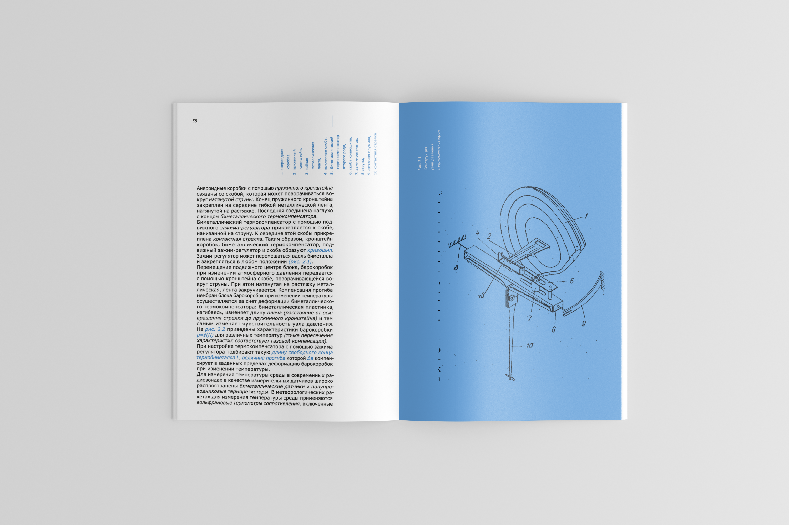
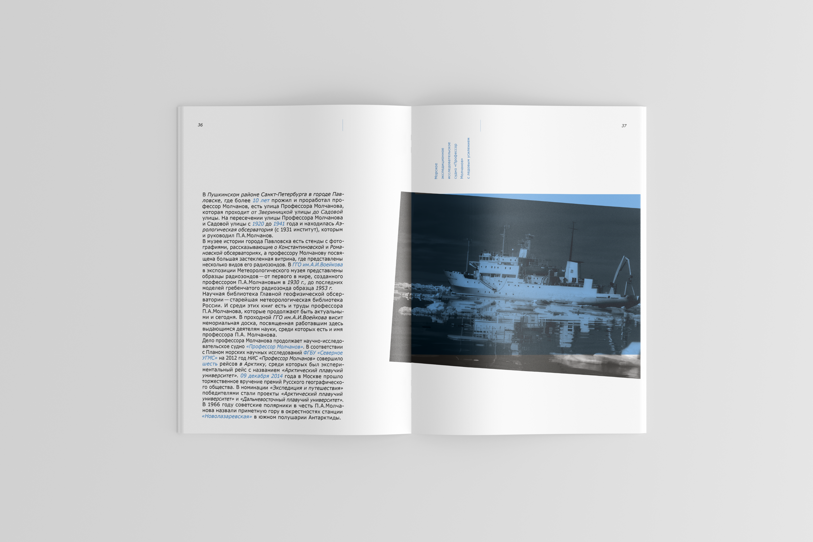
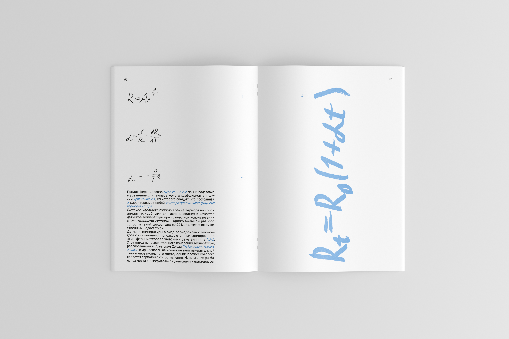
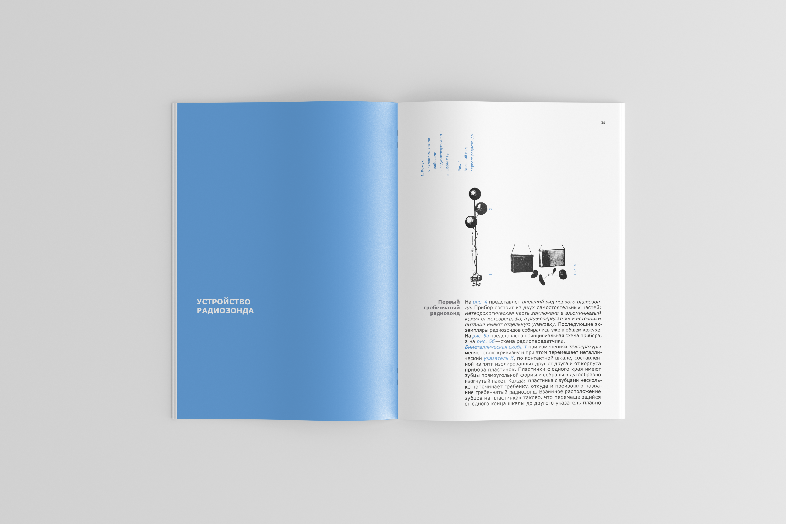

Заметки радиозонда
Задача
Создать научно-популярное издание 36+ полос о выдающемся учёном России и его изобретении + буклет
Решение
Книга о радиозонде Павла Молчанова, 84 полосы + ознакомительный буклет

Павел Молчанов был первым человеком, который предложил использование радиосвязи в зондировании атмосферы. В 1930 году он запустил первый в мире радиозонд, который собрал информацию о температуре, давлении и влажности воздуха и передал её по радиосвязи. Принцип устройства радиозонда практически не изменился и по сей день.




Для оформления печатного издания я взяла в основу идею воздушности, поэтому внутри и вверху разворота много белого пространства. Кроме того, содержание и подписи повернуты на 90 градусов, что позволяет крутить книгу и привносит момент игры при чтении (будто шар крутится в воздухе от ветра). Также в издании присутствует рукописный шрифт и фотографии хаотично повернуты относительно листа, что передаёт идею книги, как блокнота с заметками.